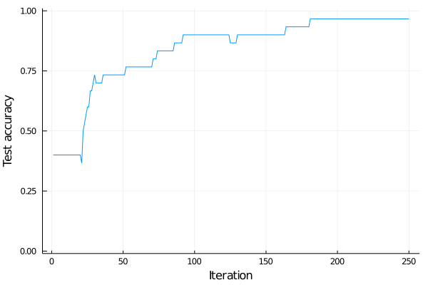

Introduction to Flux
Flux is a library for using neural networks. This part will present the basics of Flux on the Iris dataset from the previous lecture. We include the auxiliary functions from the previous lesson into the utilities.jl file, which we include by
include("utilities.jl")We set the seed and load the data in the same way as during the last lecture.
using Random
using BSON: @load
Random.seed!(666)
file_name = joinpath("data", "iris.bson")
@load file_name X y y_name
X_train, y_train, X_test, y_test, classes = prepare_data(X, y)We start by creating the same network.
Find the documentation of Flux.jl online and create the same network as in the previous lecture.
Solution:
To create the neural network, Flux uses Chain(???, ???, ...), where ??? are individual layers. Dense layers are created by Dense with the correct number of input and output neurons. We also need to specify the activation functions.
using Flux
n_hidden = 5
m = Chain(
Dense(size(X_train,1), n_hidden, relu),
Dense(n_hidden, size(y_train,1), identity),
softmax,
)Since identity is the default argument, it is possible to remove it. However, we recommend to keep it for clarity.
To evaluate the whole dataset, we call
m(X_train)3×120 Array{Float32,2}:
0.302199 0.308447 0.367382 0.13673 … 0.017684 0.381633 0.317811
0.468215 0.256639 0.409098 0.170793 0.162731 0.373635 0.350714
0.229586 0.434914 0.22352 0.692477 0.819585 0.244732 0.331475Because there are $3$ classes and $120$ samples, it returns an array of size $3\times 120$. Note that the columns are probabilities.
We can access the neural network parameters by using params(m). At the same time, we can select the second layer of m by m[2]. This can be naturally combined, so that
params(m[2])Params([Float32[-0.12225063 0.49250954 … -0.8572132 -0.48205933; 0.026877465 -0.13672298 … -0.15691267 -0.111053; -0.81124574 0.4019993 … 0.5207074 -0.33657947], Float32[0.0, 0.0, 0.0]])
returns the parameters of the second layer. Since the second layer has $5$ input and $3$ output neurons, the matrix is of size $3\times 5$ and the bias is a vector of length $3$. The parameters params(m[2]) are a tuple of the matrix and the vector. This also implies that the parameters are initialized randomly, and we do not need to take care of it. If for any reason, we need to use a special initialization, we can assign to parameters via
params(m[2])[2] .= [-1;0;1]Here, we assigned to the bias of the second layer.
To train the model, we first need to specify the loss function. Since it is the cross-entropy between the prediction and the label, it can be done via
import Flux: crossentropy
loss(x,y) = crossentropy(m(x), y)The loss function does not have m as input. Even though there could be an additional input parameter, it is customary to write it without it. To evaluate the loss function, we simply write
loss(X_train, y_train)1.4853470732147496
This computes the loss function on the whole training set. Since Flux is (unlike our implementation from the last lecture) smart, there is no need to take care of individual samples.
While the standard definition of cross-entropy is $\operatorname{loss}(y,\hat y)$, Flux uses $\operatorname{loss}(\hat y,y)$.
Since we have the model and the loss function, the only remaining required thing for training is the gradient. This can be done in a simple way by
gs = gradient(() -> loss(X_train, y_train), params(m))The function gradient takes two inputs. The first one is the function we want to differentiate, and the second one are the parameters. The loss function needs to be evaluated at the correct points X_train and y_train. In some applications (adversarial learning), we may need to differentiate with respect to other parameters such as X_train. This can be achieved by changing the second parameters of the gradient function
gs = gradient(() -> loss(X_train, y_train), params(X_train))
size(gs[X_train])(4, 120)
Since X_train is of shape $4\times 120$, the gradient needs to have the same size.
Use the documentation of Flux.jl once again and train the neural network for 250 iterations with ADAM(0.01) optimizer and no minibatches. You may want to use the Flux update! function.
Plot the accuracy on the testing set in every iteration.
Solution:
We first create the accuracy function as before
accuracy(x, y) = mean(onecold(m(x), classes) .== onecold(y, classes))To compute the gradient, we first save ps = params(m) so that we do not need to call params all the time. The gradient can be computed by gs = gradient(() -> loss(X_train, y_train), ps). Finally, the update takes the optimizer, the parameters and the gradient and performs the update. The whole code is
ps = params(m)
opt = ADAM(0.01)
max_iter = 250
acc_test = zeros(max_iter)
for i in 1:max_iter
gs = gradient(() -> loss(X_train, y_train), ps)
Flux.Optimise.update!(opt, ps, gs)
acc_test[i] = accuracy(X_test, y_test)
end┌ Warning: Assignment to `gs` in soft scope is ambiguous because a global variable by the same name exists: `gs` will be treated as a new local. Disambiguate by using `local gs` to suppress this warning or `global gs` to assign to the existing global variable. └ @ none:2
